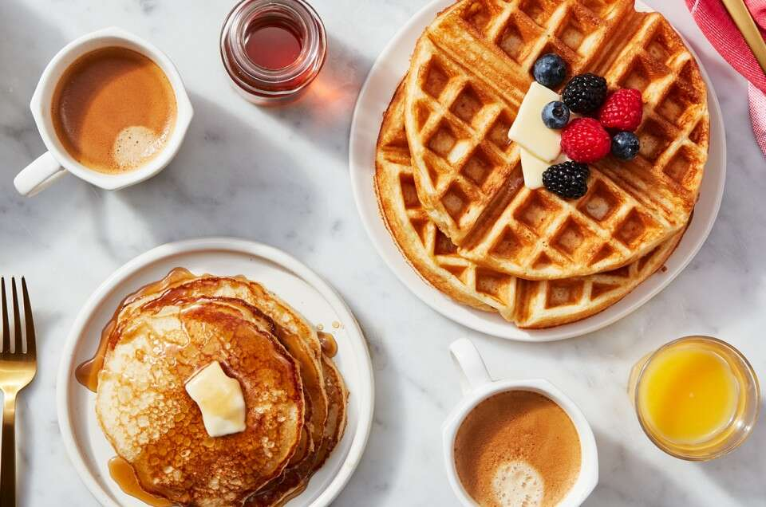

Sourdough Waffles

A simple and delicious breakfast recipe from King Author Flour. The hardest part is maintaining a sourdough starter,
but it really isn't too bad.This recipe can be used without any modifications for pancakes and waffles, though the waffles
are better! Serve warm with some maple syrup and whipped cream for a fairly easy yet fantastic breakfast. Recommend using
some of the leftover waffles as a sandwich bread, works great with cubano sandwiches anyway. Makes 12 6 inch waffles.
Overnight Sponge Ingredients:
- 2 cups (240g) unbleached all-purpose flour.
- 1 cup (227g) sourdough starter / discard.
- 2 tablespoons (28g) sugar.
- 2 cups (454g) buttermilk.
Batter Ingredients:
- All of overnight sponge.
- 2 Large eggs.
- 4 tablespoons of melted butter.
- 3/4 teaspoon salt.
- 1 teaspoon baking soda.
Recipe Instructions
- Add all sponge ingredients in large bowl and mix together until well combined.
- Let the batter rest at room temperature overnight or up to 12 hours.
- When ready to make waffles, beat the eggs in a small bowl and add the melted butter. Add to the sponge and stir until combined.
- Add the salt and baking soda to the batter, stirring again to combine.
- Now the batter is done! Heat up your waffle iron and use about 1/2 cup of batter per waffle.
- While cooking remaining waffles, keep finished waffles in a 170F / 76C oven on a wire cooling rack.
Serve warm with maple syrup, butter and whipped cream. Enjoy!